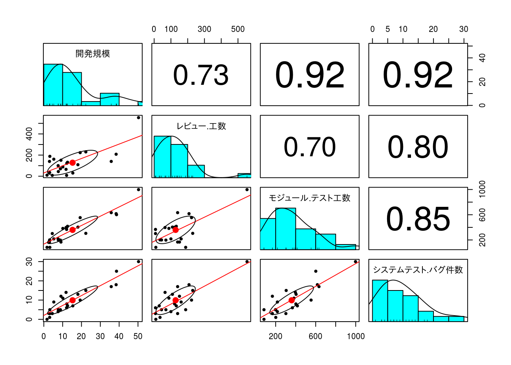
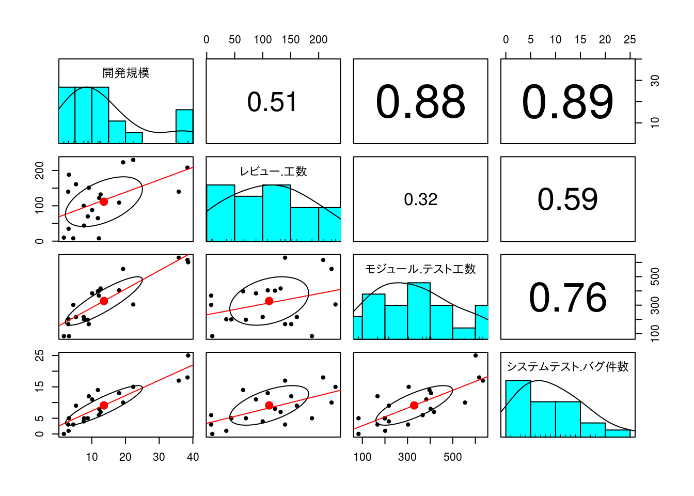
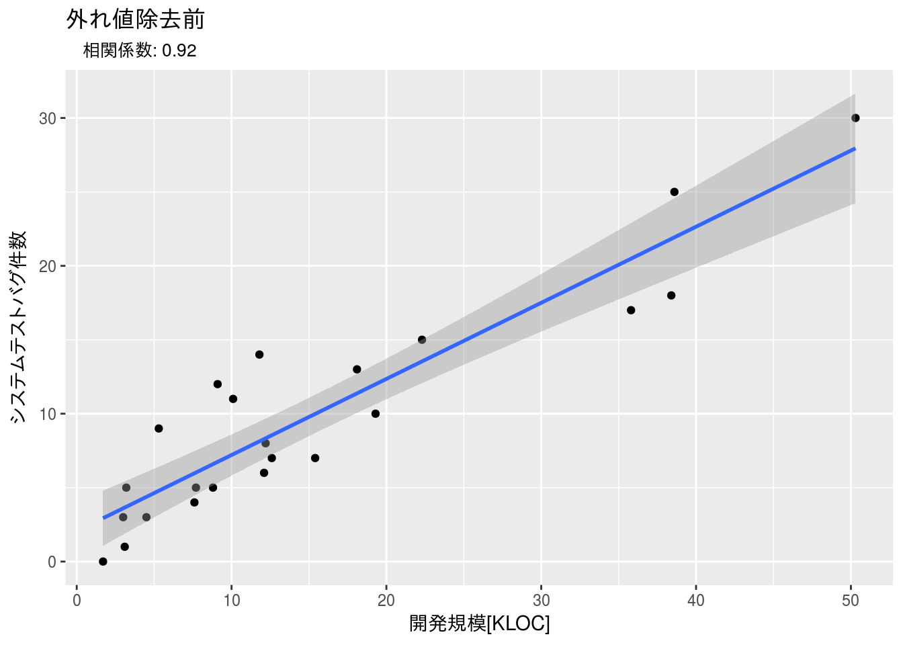
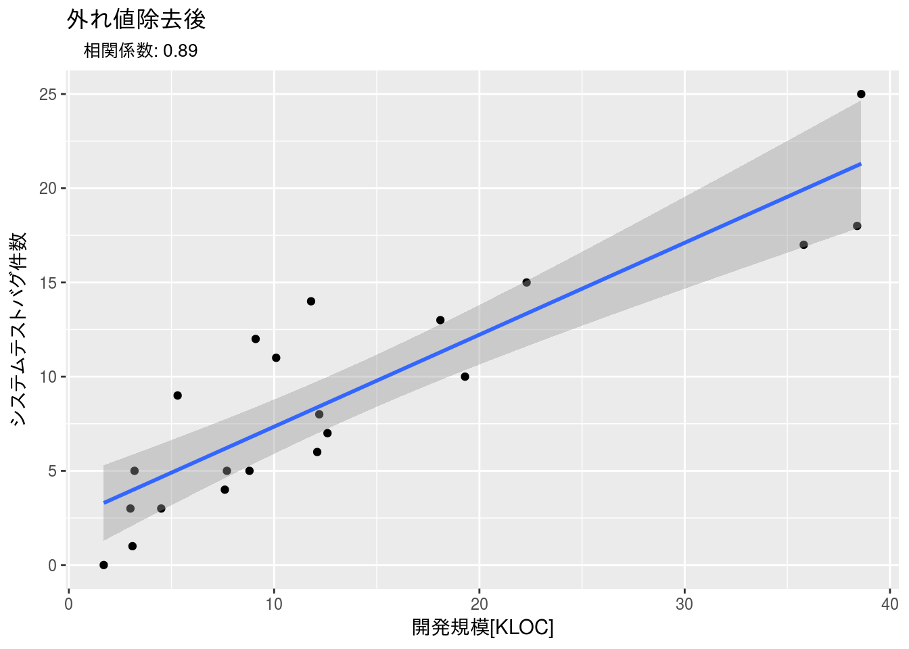
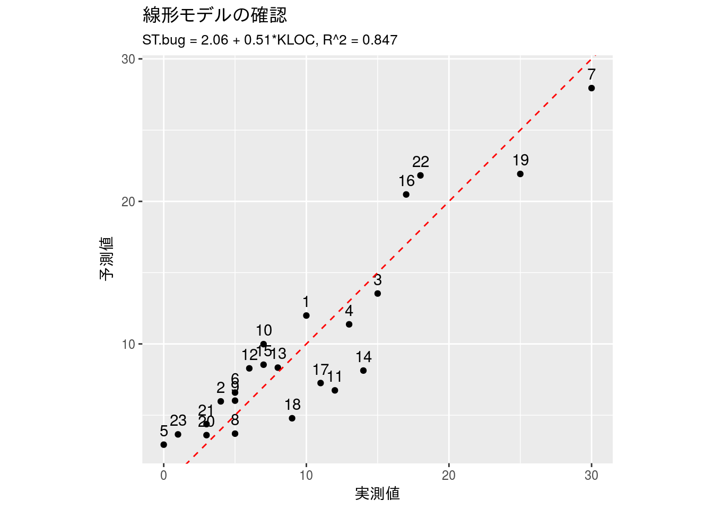
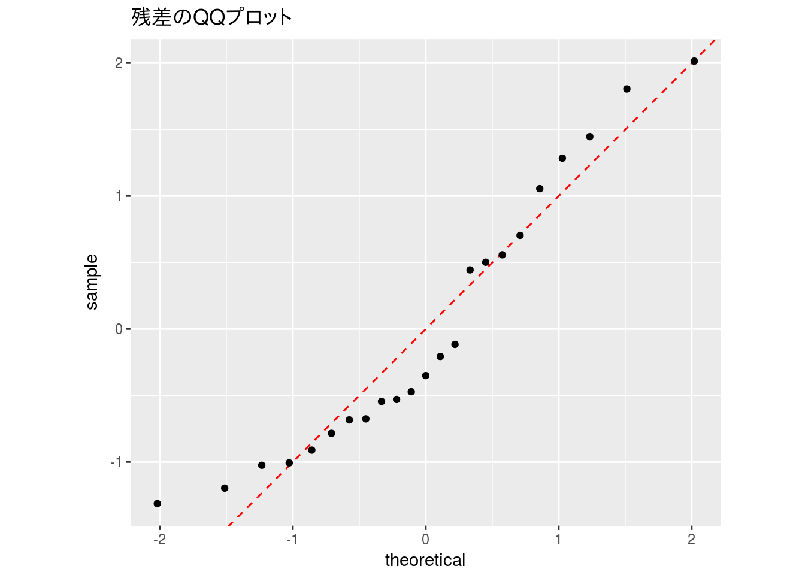

第4章 例題解答例
はじめに
本資料は『ソフトウェアメトリクス統計分析入門』(以降、テキストと記載)の第4章の例題をRで解いた際の解答例を示したものです。また、R Markdownを使うメリットを示すための一手段として作成していますので、テキストにおける計算方法とは異なる部分もあります。本資料で使用しているデータの入手に関してはテキストにてご確認下さい。
本資料がHTML形式の場合、Rのコードを参照するには右側にある[Code]ボタンをクリックして下さい。なお、JavaScriptは必ずOnにしてご覧下さい。
例題 4.1
以下にプロジェクトごとに測定された「開発規模（KLOC）」、「レビュー工数」、「モジュールテスト工数」、「システムテストバグ件数」のデータがあります。 システムテスト開始時点で「システムテストバグ件数」を予測する式を作成したいと考えています。 まずは、「システムテストバグ件数」を予測するのに「開発規模」、「レビュー工数」、「モジュールテスト工数」のいずれが最適かを調べてください。 ※部分的に欠損値（未入力データ）があります。
データの設定
本例題で利用するデータは予めCSVファイルとして保存されているものとします。
データ分布の確認
散布図行列を用いてデータの分布を確認します。散布図行列はpsychパッケージにあるpairs.panels {psych}関数を使うと相関係数まで同時に確認できるので便利です。
x %>%
select(-Project) %>%
psych::pairs.panels(smooth = FALSE, scale = TRUE, lm = TRUE)
外れ値の除去
x.rm <- x %>%
dplyr::filter(`モジュール.テスト工数` <= 950) # %>%
# tidyr::drop_na()
df_print(x.rm)再確認
x.rm %>%
select(-Project) %>%
psych::pairs.panels(smooth = FALSE, scale = TRUE, lm = TRUE)
相関係数の確認
ここではRcmdrで使っているrcorr.adjust {RcmdrMisc}関数を使っています。
x %>%
dplyr::select(-Project) %>%
dplyr::rename(ST.bug = システムテスト.バグ件数,
MT.time = モジュール.テスト工数,
Review.time = レビュー.工数, KLOC = 開発規模) %>%
RcmdrMisc::rcorr.adjust(type = "pearson", use = "complete")##
## Pearson correlations:
## KLOC Review.time MT.time ST.bug
## KLOC 1.0000 0.748 0.9195 0.9108
## Review.time 0.7480 1.000 0.6950 0.8030
## MT.time 0.9195 0.695 1.0000 0.8515
## ST.bug 0.9108 0.803 0.8515 1.0000
##
## Number of observations: 21
##
## Pairwise two-sided p-values:
## KLOC Review.time MT.time ST.bug
## KLOC <.0001 <.0001 <.0001
## Review.time <.0001 0.0005 <.0001
## MT.time <.0001 0.0005 <.0001
## ST.bug <.0001 <.0001 <.0001
##
## Adjusted p-values (Holm's method)
## KLOC Review.time MT.time ST.bug
## KLOC 0.0002 <.0001 <.0001
## Review.time 0.0002 0.0005 <.0001
## MT.time <.0001 0.0005 <.0001
## ST.bug <.0001 <.0001 <.0001計算の結果、p値を見ると相関があると言えます。
偏相関の確認
次に擬似相関が含まれていないかを偏相関係数で確認してみます。ここでもRcmdrのpartial.cor {RcmdrMisc}関数を使っています。
x %>%
dplyr::select(-Project, -レビュー.工数) %>%
dplyr::rename(ST.bug = システムテスト.バグ件数,
MT.time = モジュール.テスト工数, KLOC = 開発規模) %>%
RcmdrMisc::partial.cor(tests = TRUE, use = "complete")##
## Partial correlations:
## KLOC MT.time ST.bug
## KLOC 0.00000 0.65796 0.68892
## MT.time 0.65796 0.00000 0.01043
## ST.bug 0.68892 0.01043 0.00000
##
## Number of observations: 22
##
## Pairwise two-sided p-values:
## KLOC MT.time ST.bug
## KLOC 0.0012 0.0006
## MT.time 0.0012 0.9642
## ST.bug 0.0006 0.9642
##
## Adjusted p-values (Holm's method)
## KLOC MT.time ST.bug
## KLOC 0.0024 0.0017
## MT.time 0.0024 0.9642
## ST.bug 0.0017 0.9642計算の結果、開発規模(KLOC)とシステムバグ件数(ST.bug)の間には相関があると認められます。一方、モジュールテスト工数(MT.time)とシステムバグ件数(ST.bug)の間は修正p値から判断して相関があるとは認められない、すなわち擬似相関であると判断できます。
x.cor <- cor.test(x$開発規模, x$システムテスト.バグ件数)$estimate %>%
round(2)
x %>%
dplyr::select(-Project, -レビュー.工数, -モジュール.テスト工数) %>%
dplyr::rename(ST.bug = システムテスト.バグ件数, KLOC = 開発規模) %>%
ggplot(aes(x = KLOC, y = ST.bug)) +
geom_point() +
geom_smooth(method = "lm", se = TRUE) +
xlab("開発規模[KLOC]") + ylab("システムテストバグ件数") +
ggtitle(label = "外れ値除去前", subtitle = paste(" 相関係数:", x.cor))
x.rm.cor <- cor.test(x.rm$開発規模, x.rm$システムテスト.バグ件数)$estimate %>%
round(2)
x.rm %>%
dplyr::select(-Project, -レビュー.工数, -モジュール.テスト工数) %>%
dplyr::rename(ST.bug = システムテスト.バグ件数, KLOC = 開発規模) %>%
ggplot(aes(x = KLOC, y = ST.bug)) +
geom_point() +
geom_smooth(method = "lm", se = TRUE) +
xlab("開発規模[KLOC]") + ylab("システムテストバグ件数") +
ggtitle(label = "外れ値除去後", subtitle = paste(" 相関係数:", x.rm.cor))
例題 4.2
システムテスト開始時点の「開発規模」の測定値で、「システムテストバグ件数」を予測したいと考えています。 例題4.1と同じデータを使って、回帰分析を行い、予測式を作成してください。
データの設定
本例題で利用するデータは例題4.1のデータをそのまま使い、必要な部分だけを取り出します。
回帰分析
線形回帰モデルの算出
result.lm <- x %>%
lm(ST.bug ~ KLOC, data = .)
summary(result.lm)##
## Call:
## lm(formula = ST.bug ~ KLOC, data = .)
##
## Residuals:
## Min 1Q Median 3Q Max
## -3.824 -2.139 -1.021 1.838 5.868
##
## Coefficients:
## Estimate Std. Error t value Pr(>|t|)
## (Intercept) 2.0577 0.9573 2.149 0.0434 *
## KLOC 0.5147 0.0477 10.791 5.02e-10 ***
## ---
## Signif. codes: 0 '***' 0.001 '**' 0.01 '*' 0.05 '.' 0.1 ' ' 1
##
## Residual standard error: 2.981 on 21 degrees of freedom
## Multiple R-squared: 0.8472, Adjusted R-squared: 0.8399
## F-statistic: 116.4 on 1 and 21 DF, p-value: 5.025e-10予測値のプロット
回帰分析の結果を確認してみます。
x %>%
mutate(fit = fitted(result.lm)) %>%
ggplot(aes(x = ST.bug, y = fit)) +
geom_point() +
geom_text(aes(x = ST.bug + 0, y = fit + 1, label = row.names(x))) +
coord_equal() +
xlab("実測値") + ylab("予測値") +
ggtitle("線形モデルの確認",
subtitle = "ST.bug = 2.06 + 0.51*KLOC, R^2 = 0.847") +
geom_abline(linetype = "dashed", colour = "red")
残差プロット
単回帰分析ではここまで確認する必要はないですが参考までに残差QQプロットを確認します。
# plot(result.lm)
x %>%
mutate(res = scale(residuals(result.lm))) %>%
ggplot(aes(sample = res)) +
geom_abline(col = "red", linetype = "dashed") +
geom_qq() +
coord_equal() +
ggtitle("残差のQQプロット")
 CC BY-NC-SA 4.0, Sampo Suzuki [2017-04-22 14:22(JST)]
CC BY-NC-SA 4.0, Sampo Suzuki [2017-04-22 14:22(JST)]